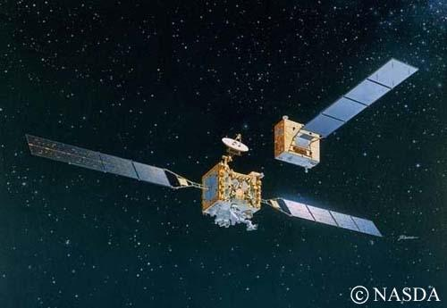
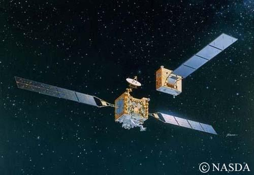

The tasks for this system are divided into three sections -
- Guidance refers to determining a strategy to find the desired path or trajectory that the Chaser needs to follow to go from its current location to a decided location, along with determining the changes in velocity, rotation, and acceleration required to follow that path.
- Navigation determines a strategy for estimating the state of the Chaser along the flight path, given outputs from specified sensors.
- Controls works towards designing an efficient position and attitude controller keeping in mind the guidance strategy and constraints of the mission.